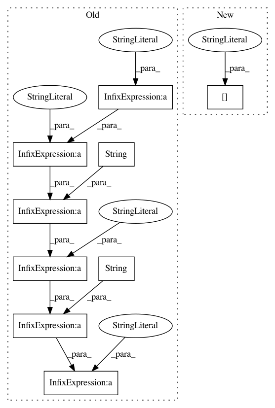

ad2ba62d566175ea3c218f9413262fd3c7c222cc,src/skmultiflow/neural_networks/perceptron.py,PerceptronMask,get_info,#PerceptronMask#,133
Before Change
fit_int = "True" if fit_int else "False"
shuffle = params["shuffle"]
shuffle = "True" if shuffle else "False"
return "Perceptron: penalty: " + penalty + \
" - alpha: " + str(round(params["alpha"], 3)) + \
" - fit_intercept: " + fit_int + \
" - n_iter: " + str(params["n_iter"]) + \
" - shuffle: " + shuffle
After Change
info += " - max_iter: {}".format(params["max_iter"])
info += " - tol: {}".format(params["tol"])
info += " - shuffle: {}".format(params["shuffle"])
info += " - eta0: {}".format(params["eta0"])
info += " - warm_start: {}".format(params["warm_start"])
info += " - class_weight: {}".format(params["class_weight"])
info += " - n_jobs: {}".format(params["n_jobs"])
In pattern: SUPERPATTERN
Frequency: 3
Non-data size: 9
Instances
Project Name: scikit-multiflow/scikit-multiflow
Commit Name: ad2ba62d566175ea3c218f9413262fd3c7c222cc
Time: 2018-09-10
Author: jacob.montiel@gmail.com
File Name: src/skmultiflow/neural_networks/perceptron.py
Class Name: PerceptronMask
Method Name: get_info
Project Name: ricsinaruto/Seq2seqChatbots
Commit Name: d9748278abf04a9c74a95053fda62d0bff8b9f93
Time: 2019-02-16
Author: ricsinaruto@hotmail.com
File Name: t2t_csaky/utils/run.py
Class Name:
Method Name: experiment
Project Name: BerkeleyAutomation/gqcnn
Commit Name: e1594239b29e1de96482c28ad5e39cc6cbaf3f2c
Time: 2017-06-07
Author: sniyaz@berkeley.edu
File Name: ros_nodes/grasp_sampler_node.py
Class Name:
Method Name: bounding_box_callback